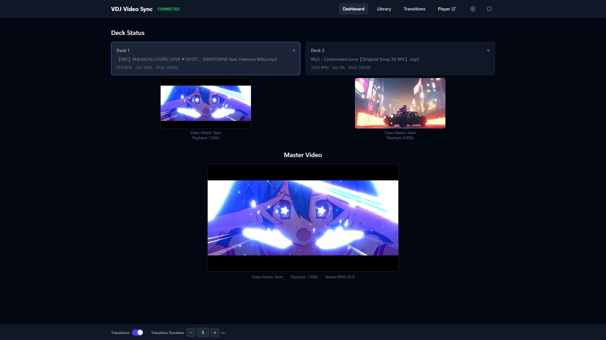
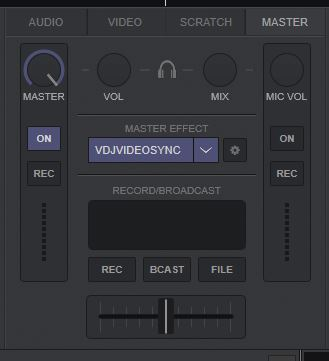

⚡ Getting Started
-
Install the VDJ plugin — copy the plugin file to your VirtualDJ effects folder:
Windows: %USERPROFILE%\AppData\Local\VirtualDJ\Plugins64\SoundEffect\
macOS: ~/Library/Application Support/VirtualDJ/Plugins64/SoundEffect/
-
Enable the effect in VirtualDJ — open VirtualDJ, go to the Master panel, and enable the Master Effect called VdjVideoSync.

-
Launch the server — run the server executable. Your browser will automatically open the dashboard. From there, configure where your video files and transition videos are stored using the settings panel.
-
Play music in VirtualDJ — the dashboard will automatically match and sync videos to whatever is playing, with BPM-synced playback and crossfade transitions on deck switches.
💡 Tip: You can also open the dashboard from any other computer on your local network by navigating to http://<your-ip>:8090/dashboard. Mobile devices are not supported due to video decoding performance requirements.
✨ Features
- 6-level smart video matching: exact, stem, fuzzy, BPM+fuzzy, BPM, random
- BPM analysis from audio — no ffmpeg needed
- Playback rate adjustment to sync video BPM to song BPM
- Crossfade transitions with configurable duration
- Multi-deck support (up to 4 decks)
- Force any video to any deck from the library browser
- Real-time updates across all browser tabs
- Standalone fullscreen player at
/player
- Web-based — works on any desktop device with a modern browser
🎯 Video Matching
| Level |
Type |
Description |
| 0 |
Exact |
Filename matches exactly |
| 1 |
Stem |
Cleaned filename stems match (no file extension) |
| 2 |
Fuzzy |
≥60% name similarity |
| 3 |
BPM + Fuzzy |
Closest BPM among videos with ≥30% name similarity |
| 4 |
BPM |
Closest BPM match from all videos |
| 5 |
Random |
Random selection when no other match found |
📋 Requirements
- VirtualDJ 8+ (Windows or macOS)
- MP4 video files with AAC or Opus audio (YouTube downloaded videos supported)
- A modern desktop web browser (Chrome, Edge, Firefox, Safari)